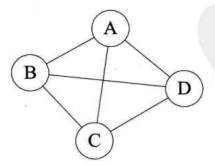

图的定义
图是由顶点集合以及顶点间的关系集合组成的一种数据结构
Graph = (V,E) V是顶点的有穷非空集合,E是顶点之间关系的有穷集合，也叫边集合.
- 线性表中数据元素叫元素,树中将数据元素叫结点,在图中数据元素称为顶点.
- 线性表可以没有元素称为空表,树中没有结点称为空树,但是图中没有定点不能称为图.图中顶点集合V必须是有穷非空的.
- 在图中任意两个顶点都可能有关系,顶点间逻辑关系用边来表示,边集合E可以是空的.
各种图定义
- 无向边:若顶点Vi到Vj之间的边没有方向,则称这条边为无向边(Edge),用无序偶对(Vi,Vj)表示.如果图中任意两个顶点之间都是无向边,则称为无向图.如下图
- 有向边:若从顶点Vi到Vj的边有方向,则称为这条边为有向边,也称为弧(arc).用有序对偶

上图中A到D的有向边就是弧,A是弧头,D是弧尾, < A , D >就表示该弧,不能写成 < D , A > .
同时无向图中无序对偶用 (Vi,Vj) 表示,且没有前后顺序,有向图中用 < Vi , Ji > 表示,且有弧头弧尾的顺序,书写需要注意 ( ) 与 < > 和顺序的区别.
简单图:在图中不存在顶点到自身的边,且同一条边不重复出现,这样的图就是简单图.上面两张图都是简单图.
无向完全图:若任意两个顶点之间都存在边,该图称为无向完全图.即有n个顶点,就有(n * (n - 1)) / 2条边.如下图

有向完全图:如果任意两个顶点之间都存在方向相反的两条弧,该图称为有向完全图.如下图.
边或弧很少的图,称为稀疏图,反之成为 稠密图.这里的稀疏和稠密是模糊概念,不用区分太细.
有些图的边或弧具有与它相关的数字,这种与图的边或弧相关的数叫做权(Weight),这些权表示从一个顶点到另一个顶点的距离或耗费等等,这种带权的图通常称为网.
- 子图:假设有两个G=(V,{E}),和G’=(V’,{E’}).如果V’∈V且.E’∈E,则称G’为G的子图.如下带底色的图均是左图的子图
图的顶点和边的关系
对于无向图G = ( V , { E } )如果变 ( V , V’ ) ∈ E,则称顶点V和V’互为邻接点(Adjacent),即V和V’相邻接.边(V,V’)依附(incident)与顶点V和V’.或者说( V , V’ )与顶点V,V’相关联.
顶点V的度,是和V相关联的边的数目,记为TD(v). 边数就是各顶点度数的一半,简记为
对于有向图G=(V,{E}),如果弧 < V , V’ > ∈ E,则称顶点V邻接到顶点V’,顶点V’邻接自顶点V(需要区分清邻接被邻接的关系),弧 < V , V’ >和顶点V,V’相关联,以顶点V为头的弧的数量称为V的入度,记做ID(v).以V为尾的弧的数量称为出度,记做OD,顶点V的度为 TD(v)=ID(v)+OD(v). 边数公式为
无向图G = ( V , { E } )中从顶点Ｖ到顶点Ｖ’的路径是一个顶点序列
图中Vi,0表示顶点Vi到顶点V0的路径,顶点路径也就是一个顶点到另一个顶点之间的路径集合.
- 树中根节点到任意结点的路径是唯一的,但是图中顶点与顶点之间的路径并不是唯一的.
- 路径的长度是路径上的边或弧的数目.
- 在一条中若没有重复的顶点,该路径称为简单路径
- 第一个顶点和最后一个顶点相同的路径称为回路或环(Cycle)
- 除了第一个顶点和最后一个顶点之外,其余顶点不重复出现的回路称为简单回路或简单环.
连通图相关术语
连通图:在无向图G中,如果顶点V到V’有路径,则称V和V’是相通的,如果对于图中任意两个顶点Vi , Vj ∈ V,Vi Vj都是连通的,则称图G是连通图.即任意两个结点都有其连通的路径.
极大连通子图:连通顶点数量最多的子图.又称连通分量.(这个极大…不知道怎么命名的…)
简单说法:向该图中加入原图中任意顶点和边之后该子图就变为不连通图,这样的子图称为极大连通图.
需要注意的点:
- 必须是子图
- 子图要是连通的 (即各个顶点之间需要有路径能连通)
- 连通子图含有极大定点数 (即包含所有可连通的顶点,不能只包含一部分)
- 具有极大顶点数的连通子图包含依附于这些顶点的所有边
如上图中,图一是一个无向非连通图.图二和图三就是其连通分量.图四因为只有三个顶点,而最多可以有四个,并不是最多的,不满足上面需要注意的第三点.所以不是其连通分量.
在有向图G中,如果对于每一对Vi , Vj ∈ E, Vi ≠ Vj,从Vi到Vj 和从Vj到Vi都存在路径,则称G为强连通图(就是一个任意顶点有到达另一个任意顶点非本身的路径.),有向图中极大强连通子图称作有向图的强连通分量.(和无向图的连通分量定义一样,只不过无向图路径能往返使用,有向图要区分方向.)
如下图图一D到A不存在路径,就不是强连通图,而图二就满足.而且图二很明显是图一的强联通分量.
无向图中连接N个顶点且只有N-1条边,又称为生成树.(很多人把极小连通子图和生成树混为一谈,但是都包含N个顶点了何来极小一说?还是说这个极小指的是边?个人觉得和离心力一样是传播中的误解.)
一个有向图恰有一个顶点入度为0,其余顶点入度均为1,则称为有向树,入度为0的顶点可以看做树的根节点.入度为1就是结点双亲只有一个.